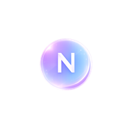
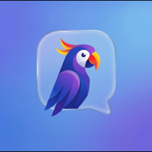

AraChatProduct Beta DeckBeta version · 10 июля
AraChat: мессенджер нового поколения
Личные чаты, быстрый вход, медиа-сообщения и собственный визуальный стиль — в первой веб-бета версии продукта.
Идея продукта
Простой, быстрый и безопасный способ личного общения
AraChat создаётся как современный мессенджер для широкой аудитории. Первая версия сфокусирована на самом важном: зарегистрироваться, найти человека, начать личный чат и обмениваться сообщениями без лишней сложности.
Личные чаты 1-на-1 вместо перегруженного комбайна функций.
Публичный 16-значный AraChat ID и username для поиска людей.
Два языка интерфейса, адаптивный web и PWA-подход.
Почему это важно
Пользователям нужен мессенджер без лишнего шума
Многие приложения смешивают чаты, каналы, группы, рекламу, рекомендации и лишние сценарии.
Пользователь хочет быстро восстановить доступ и войти на доверенном устройстве без постоянных лишних шагов.
Продукту важно иметь узнаваемый стиль, а не выглядеть как копия существующих решений.
Сначала стабильная web-база, потом Desktop, Mobile, звонки и расширенные функции.
Решение
AraChat Beta — рабочий web-MVP без звонков
Бета-версия показывает полный базовый путь пользователя: регистрация, вход, профиль, настройки, личные чаты, медиа, реакции, статусы и realtime-события.
Для кого
Для людей, которым нужен спокойный личный мессенджер
Проверяют быстрый вход, личные чаты, отправку сообщений и базовую стабильность.
Смотрят на потенциал продукта, архитектуру и дальнейший roadmap.
Получит web, затем desktop и mobile-клиенты с единым UX.
Путь пользователя
От первого запуска до первого сообщения
Видит стартовый экран и выбирает регистрацию или вход.
Получает AraChat ID, username, пароль и recovery code.
Может включить PIN для быстрого входа на устройстве.
По username или 16-значному AraChat ID.
Отправляет текст, медиа, voice, emoji и реакции.
Идентичность аккаунта
AraChat ID + username
Каждый пользователь получает постоянный публичный 16-значный AraChat ID и может выбрать username. Это даёт понятный способ найти человека без обязательной привязки к e-mail.
- Регистрация через Telegram proof / early beta access.
- Вход по AraChat ID + пароль.
- Быстрый вход по PIN на доверенном устройстве.
- Восстановление через резервный код.
2048
7712
6041пример публичного AraChat ID
Коммуникация
В beta уже есть основа живого общения
Text, photo, video, file, voice и emoji-сообщения.
WebSocket reconnect, новые сообщения, реакции, typing и presence baseline.
Базовые sent, delivered, read и визуальные индикаторы активности.
Upload endpoint, локальное dev-хранилище, MIME allow-list и лимит 100 МБ.
Быстрый набор emoji и счётчики реакций на сообщение.
Запись голосового сообщения прямо в браузере через MediaRecorder.
Дизайн
Собственный визуальный стиль AraChat
Интерфейс строится на мягких glass-панелях, аккуратной типографике, светящихся акцентах, адаптивной сетке и анимациях входа/загрузки.
«Не копировать существующие мессенджеры — создать узнаваемый, спокойный и премиальный AraChat UI.»
Безопасность аккаунта
Базовая защита уже заложена в beta
Argon2-хеширование секретов, recovery code хранится только как хеш, сброс пароля через код.
JWT access token, refresh token с серверным хешем, logout и восстановление сессии.
Быстрый вход по PIN работает только на доверенном устройстве и управляется из настроек.
Список активных устройств, история входов и отзыв сессии устройства.
Технологии
Современный web-stack с понятным развитием
React, Vite, React Router, CSS design system.
FastAPI, async SQLAlchemy, Alembic, Redis client.
WebSocket API, подписка на чат, reconnect на клиенте.
Локальный dev storage baseline для файлов и медиа.
Платформы
Сначала Web/PWA, затем Desktop и Mobile
Первая платформа. Работает в современных браузерах и адаптируется под desktop, tablet и phone.
Следующий этап: Tauri + React, Windows 10+ и macOS 14+.
После desktop: React Native, iOS 17+ и Android 8+.
Сроки разработки
11 марта — 10 июля: путь к beta
Старт идеи, архитектуры и product scope для AraChat Web/v1.
Проектирование Web Core, UI kit, сценарии регистрации и чатов.
Backend foundation: модели, миграции, auth, session, recovery.
Frontend app shell, профиль, настройки, чаты, realtime baseline.
Beta: медиа, voice, реакции, статусы, дизайн polish и презентация.
Что готово в beta
Демонстрационный web MVP без звонков
Регистрация, вход, recovery, PIN, профиль, язык, тема, устройства и история входов.
Создание direct-чата по username/AraChat ID, история сообщений, realtime и reconnect.
Фото, видео, документы, voice, emoji, реакции и статусы прочтения.
Новый логотип, app icons, loader GIF с N, responsive layout, анимации и Liquid Glass theme.
Что не входит в beta
Бета честно ограничена, чтобы быстрее проверить ядро
Аудиозвонки и демонстрация экрана вынесены в Web Calls & Release.
Первая версия фокусируется на личных чатах 1-на-1.
Файлы сейчас в локальном dev storage, без private ACL/signed links.
Redis pub/sub и multi-instance fan-out — следующий шаг стабилизации.
Архитектура не закрывает путь к E2EE, но beta не реализует клиентское шифрование.
Ручная процедура через бот остаётся в roadmap.

AraChat15 · Next stepsСледующие шаги
От beta к публичному AraChat Web/v1
Smoke-check, accessibility, mobile polish, больше тестов, UX-валидация ошибок и edge cases.
PostgreSQL/Redis окружение, миграции, health checks, подготовка staging.
Object storage, private access model, безопасная раздача файлов.
Аудиозвонки, screen sharing, жалобы, блокировки, финальная PWA-адаптация.
Почему сейчас
База уже достаточно сильная для демонстрации
AraChat прошёл путь от архитектурного плана до работающей beta-версии с реальными сценариями пользователя. Теперь можно показывать продукт, собирать обратную связь и принимать решения по следующей вехе.
Финал
AraChat Beta — фундамент будущей коммуникационной платформы
Цель следующего шага — проверить продукт на реальных сценариях, укрепить стабильность и довести AraChat Web/v1 до публичного релиза.